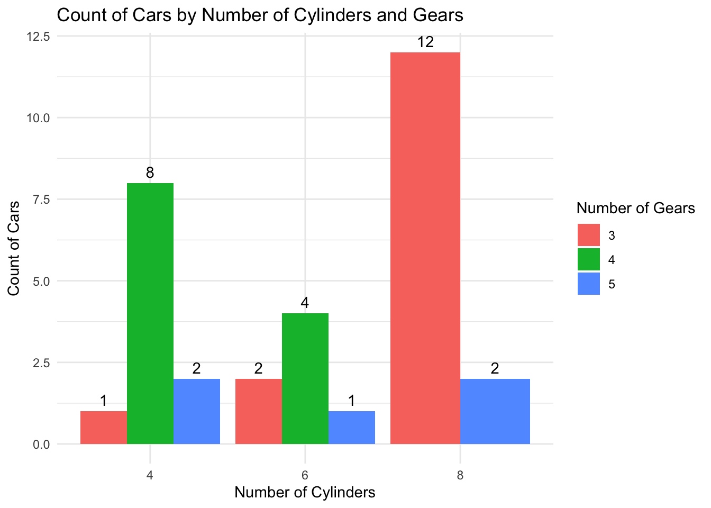
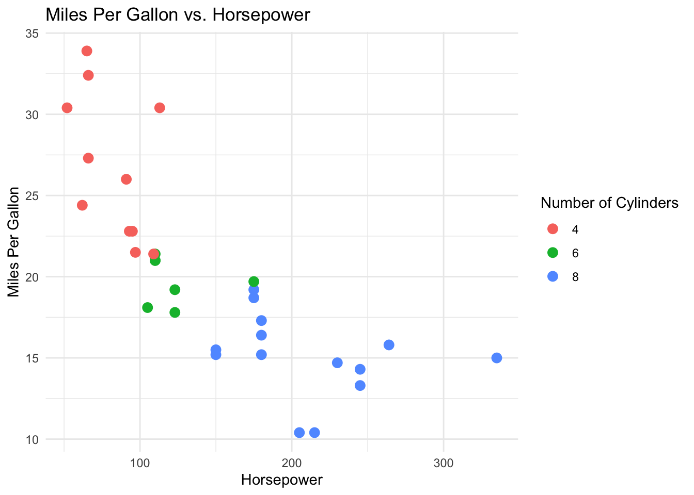
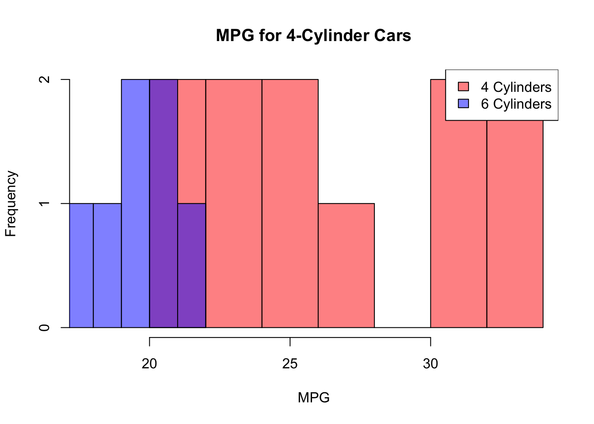
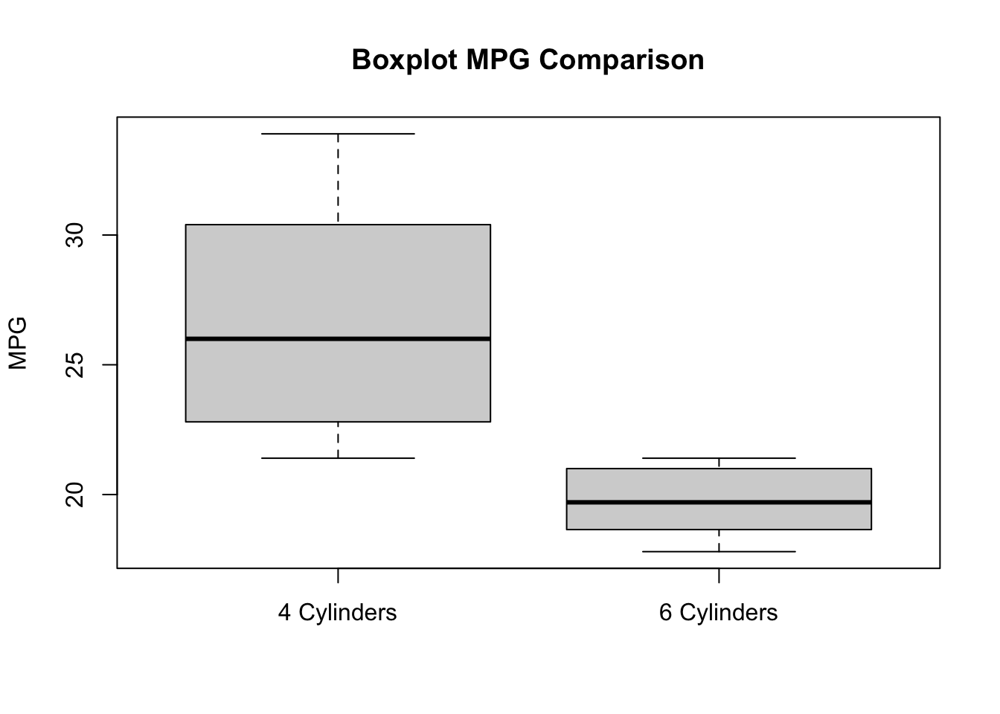

'data.frame': 32 obs. of 11 variables:
$ mpg : num 21 21 22.8 21.4 18.7 18.1 14.3 24.4 22.8 19.2 ...
$ cyl : num 6 6 4 6 8 6 8 4 4 6 ...
$ disp: num 160 160 108 258 360 ...
$ hp : num 110 110 93 110 175 105 245 62 95 123 ...
$ drat: num 3.9 3.9 3.85 3.08 3.15 2.76 3.21 3.69 3.92 3.92 ...
$ wt : num 2.62 2.88 2.32 3.21 3.44 ...
$ qsec: num 16.5 17 18.6 19.4 17 ...
$ vs : num 0 0 1 1 0 1 0 1 1 1 ...
$ am : num 1 1 1 0 0 0 0 0 0 0 ...
$ gear: num 4 4 4 3 3 3 3 4 4 4 ...
$ carb: num 4 4 1 1 2 1 4 2 2 4 ...17 Two sample Welchs test or Welchs t-test
17.1 Packages for this lesson
We will need to load tidyverse (which contains ggplot2 and dplyr) and e1071. We are going to use the mtcars dataset included in r studio.
17.2 Introduction
Welch’s t-test, also known as Welch’s unequal variances t-test, is a statistical test used to determine if there is a significant difference between the means of two independent samples. It is an adaptation of Student’s t-test and is more reliable under the next conditions:
17.2.1 When to use Welch´s t-test
Welch’s t-test is particularly useful in the following scenarios:
- The two samples have unequal variances (heteroscedasticity).
- The two samples have unequal sample sizes.
In contrast, Student’s t-test assumes that the two samples have equal variances (homoscedasticity). If this assumption is violated, Welch’s t-test provides a more accurate p-value (Moore, McCabe, & Craig, 2016).
17.3 Assumptions
- Independence: the observations in each sample should be independent of each other.
- Normality: the data in each group should be approximately normally distributed. Welch’s t-test is fairly robust to deviations from normality, especially with larger sample sizes >30.
- Unequal Variances: Unlike Student’s t-test, Welch’s t-test does not assume equal variances between the two groups (Newbold, Carlson, & Thorne, 2012).
The formula for the two-sample Welch’s t-test is given by (Agresti & Franklin, 2017):
\[ t = \frac{\bar{X}_1 - \bar{X}_2}{\sqrt{\frac{s_1^2}{n_1} + \frac{s_2^2}{n_2}}} \]
Where: \[\begin{align*} \bar{X}_1 & \text{ is the sample mean of the first group (4-cylinder cars)} \\ \bar{X}_2 & \text{ is the sample mean of the second group (6-cylinder cars)} \\ s_1^2 & \text{ is the sample variance of the first group} \\ s_2^2 & \text{ is the sample variance of the second group} \\ n_1 & \text{ is the sample size of the first group} \\ n_2 & \text{ is the sample size of the second group} \end{align*}\]
The degrees of freedom (DoF) for the Welch’s t-test are calculated using the Satterthwaite approximation (Khan Academy, n.d.):
\[ \text{DoF} \approx \frac{\left( \frac{s_1^2}{n_1} + \frac{s_2^2}{n_2} \right)^2}{\frac{\left( \frac{s_1^2}{n_1} \right)^2}{n_1 - 1} + \frac{\left( \frac{s_2^2}{n_2} \right)^2}{n_2 - 1}} \]
17.4 Welch’s t-Test vs. Student’s t-Test
- Equal Variances (Student’s t-Test): Use when you have equal variances and possibly equal sample sizes.
- Unequal Variances (Welch’s t-Test): Use when the variances and/or sample sizes are unequal.
17.5 The reliability of the Welch’s t-test
Like other statistical tests, can be influenced by the sample size. However, the Welch’s t-test is designed to be more robust than the traditional Student’s t-test, particularly when the sample sizes are unequal and the variances of the two groups are different. Here are some general guidelines to consider (Wikipedia contributors, n.d.):
17.5.1 Minimum Sample Sizes
Small Sample Sizes: The Welch’s t-test can be used with small sample sizes, but very small sample sizes (e.g., fewer than 5 per group) can limit the power of the test and make it more difficult to detect significant differences.
Recommended Minimum: a common recommendation is to have at least 10-15 observations per group to ensure a reasonable level of reliability and power. This isn’t a hard rule, but a guideline to aim for (Glen, 2022).
17.5.2 Power and Effect Size
Power Analysis: To determine the appropriate sample size for your specific context, you can perform a power analysis. This involves specifying the expected effect size, the desired power (commonly 0.80), and the significance level (commonly 0.05). The power analysis will help you estimate the necessary sample size to detect a significant difference if one exists (Ahad & Yahaya, 2014), (Zhou, Ren, & Brooks, 2023).
17.5.3 Factors Affecting Sample Size Requirements
Effect Size: larger effect sizes (i.e., larger differences between group means) can be detected with smaller sample sizes. Smaller effect sizes require larger sample sizes to be detected, in others worlds if you want to detect an smaller difference or effect you need more power, and the way to increase it is enlarging the sample, but this is not always feasible in real life due to logistical and cost considerations (Haas, 2012).
Variance: if the variances of the two groups are very different, larger sample sizes may be needed to ensure the robustness of the test.
Significance Level and Power: lowering the significance level (e.g., to 0.01) or increasing the desired power (e.g., to 0.90) typically requires larger sample sizes (Haas, 2012).
Non normality: it is moderately robust to non-normality, especially as sample sizes increase. For larger samples, the Central Limit Theorem (CLT) helps ensure that the sampling distribution of the test statistic approaches normality, making the test more reliable. For small sample sizes, the reliability of Welch’s t-test can be compromised if the data are significantly non-normal. In such cases, the test may not perform well, and the results might be less trustworthy, in these cases consider using non-parametric alternatives like the Mann-Whitney U test, which does not assume normality. Also consider data transformation and Bootstrap methods, if you want to keep with parametric methods, considering that non-parametric methods have less power.
If sample sizes are reasonably large (generally n > 30 per group), Welch’s t-test tends to be reliable even when the data are not perfectly normal (Lund Research Ltd, n.d.).
17.5.4 Let´s remember
The significance level, denoted as α, is a threshold in hypothesis testing that determines whether to reject the null hypothesis. It is the probability of making a Type I error, which occurs when the null hypothesis is true but incorrectly rejected. Common values for α are 0.05, 0.01, and 0.10 (Labovitz, 2017).
For α = 0.05, there is a 5% chance of rejecting the null hypothesis when it is true. If the p-value from a statistical test is less than or equal to α, we reject the null hypothesis; if it is greater, we do not reject the null hypothesis.
The Central Limit Theorem (CLT) states that the distribution of the sample mean will approximate a normal distribution as the sample size becomes large, regardless of the population’s distribution, provided the samples are independent and identically distributed (Kwak & Kim, 2017).
In the context of Welch’s test, the CLT implies that as the sample size increases, the distribution of the test statistic approaches normality, reducing the impact of non-normality in the original data. Thus, Welch’s test becomes more reliable with larger samples because the sampling distribution of the mean difference tends to be normal.
If the samples are not identically distributed, meaning they come from populations with different distributions, the assumptions underlying the Central Limit Theorem (CLT) and many statistical tests, including Welch’s t-test, may be violated. This can have several consequences:
Reduced Accuracy: The approximation to the normal distribution for the sample mean may not hold, leading to inaccurate p-values and confidence intervals.
Increased Type I and Type II Errors: There may be an increased risk of Type I errors (incorrectly rejecting a true null hypothesis) and Type II errors (failing to reject a false null hypothesis).
Biased Results: The test results may be biased, reflecting the differences in the underlying distributions rather than the true differences between the population means (Ruxton, 2006).
17.5.5 Suspecting Different Variances:
You might suspect different variances when comparing two groups (samples) and their spread appears noticeably different. For example, if one group’s data points are more dispersed than the other, it could indicate unequal variances.The welch´s test dont need equal variances to perform well but you can asses variances with graphical methods and using the Levene´s test.
17.5.6 Assessing normality:
Shapiro-Wilk Test: Purpose: Determines if a sample comes from a normally distributed population. Suitability for Small Samples: Good power even with small sample sizes (< 50). How It Works: Compares the sample data to a normal distribution. Interpretation: If p-value < chosen alpha level, data is not normally distributed. Advantages: Sensitive to deviations in both location and shape. Limitations: May detect trivial deviations due to large sample size1 (Razali & Wah, 2011).
Kolmogorov-Smirnov (K-S) Test: Purpose: Compares two samples or tests if a sample matches a reference distribution. Suitability for Small Samples: Useful for small to large sample sizes. How It Works: Quantifies the distance between empirical and reference cumulative distribution functions. Interpretation: Compares observed data to expected distribution. Advantages: Sensitive to differences in both location and shape. Limitations: May not be better than Shapiro-Wilk for small samples (Razali & Wah, 2011).
Anderson-Darling Test: Purpose: Tests if a sample comes from a specific distribution (e.g., normal). Suitability for Small Samples: Similar to Shapiro-Wilk. How It Works: Compares observed data to expected distribution. Interpretation: Reject null hypothesis if p-value < chosen alpha level. Advantages: Generalizes well for various distributions. Limitations: Adjust for parameter estimation if needed (Razali & Wah, 2011).
Graphical Inspection: Plot histograms or box plots for each group. Look for differences in spread!!
17.6 Defyning the question and hypotheses
Null hypothesis (H0): 4 cylinder cars and 6 cylinder cars have equal miles per galon (mpg) mean. Alternative hypothesis (HA): 4 cylinder cars and 6 cylinder cars have not equal miles per galon (mpg) mean.
17.7 Dataset visualization
We will use the mtcars dataset in R for this demonstration. This dataset contains various attributes of different car models and at priori we are not sure if the assumptions are meet, so we have to assess the data first:
As we can see, we have a data set with the information about different types of cars, with 11 different variables including miles per gallon (mpg), cylinder (cyl), horse power (hp), etc., and there are 32 observations for each variable.
mpg cyl disp hp
Min. :10.40 Min. :4.000 Min. : 71.1 Min. : 52.0
1st Qu.:15.43 1st Qu.:4.000 1st Qu.:120.8 1st Qu.: 96.5
Median :19.20 Median :6.000 Median :196.3 Median :123.0
Mean :20.09 Mean :6.188 Mean :230.7 Mean :146.7
3rd Qu.:22.80 3rd Qu.:8.000 3rd Qu.:326.0 3rd Qu.:180.0
Max. :33.90 Max. :8.000 Max. :472.0 Max. :335.0
drat wt qsec vs
Min. :2.760 Min. :1.513 Min. :14.50 Min. :0.0000
1st Qu.:3.080 1st Qu.:2.581 1st Qu.:16.89 1st Qu.:0.0000
Median :3.695 Median :3.325 Median :17.71 Median :0.0000
Mean :3.597 Mean :3.217 Mean :17.85 Mean :0.4375
3rd Qu.:3.920 3rd Qu.:3.610 3rd Qu.:18.90 3rd Qu.:1.0000
Max. :4.930 Max. :5.424 Max. :22.90 Max. :1.0000
am gear carb
Min. :0.0000 Min. :3.000 Min. :1.000
1st Qu.:0.0000 1st Qu.:3.000 1st Qu.:2.000
Median :0.0000 Median :4.000 Median :2.000
Mean :0.4062 Mean :3.688 Mean :2.812
3rd Qu.:1.0000 3rd Qu.:4.000 3rd Qu.:4.000
Max. :1.0000 Max. :5.000 Max. :8.000 17.8 Plotting Mtcars data

On this bar graph we observe the count of cars by number of cylinders and gears.

Just to give us an idea of the data set, on this plot we observed the relation between horse power and cylinders. The cars with more cylinders have more hp and probably do less miles per gallon.
17.8.1 Assessing the distribution

This histogram shows there is a difference distribution on the miles per gallon (MPG) variable between 4 and 6 cylinder cars. 6 cylinder cars appear to have a normal distribution but 4 cylinder cars not.

This boxplot also shows the difference between the two groups. 4 cylinder cars have a bigger variance on the mpg variable.

This Q-Q plots shows a red line and a blue line, if both diverge it means the two groups have different distributions.
17.8.2 Assessing skewness and kurtosis
# Calculate skewness and kurtosis for mpg_4_cyl
skewness_4_cyl <- skewness(mpg_4_cyl)
kurtosis_4_cyl <- kurtosis(mpg_4_cyl)
# Calculate skewness and kurtosis for mpg_6_cyl
skewness_6_cyl <- skewness(mpg_6_cyl)
kurtosis_6_cyl <- kurtosis(mpg_6_cyl)
# Print the results
cat("Skewness for mpg_4_cyl:", skewness_4_cyl, "\n")Skewness for mpg_4_cyl: 0.2591965 cat("Kurtosis for mpg_4_cyl:", kurtosis_4_cyl, "\n")Kurtosis for mpg_4_cyl: -1.645012 cat("Skewness for mpg_6_cyl:", skewness_6_cyl, "\n")Skewness for mpg_6_cyl: -0.1583137 cat("Kurtosis for mpg_6_cyl:", kurtosis_6_cyl, "\n")Kurtosis for mpg_6_cyl: -1.906971 Skewness: Skewness measures the asymmetry of the distribution of a variable. A normal distribution has a skewness value of zero, indicating symmetry. Positive skewness means the right tail is longer (values cluster to the left of the mean), while negative skewness means the left tail is longer. If skewness is substantial (e.g., greater than 2.1), it suggests departure from normality. It is not the case here!!
Kurtosis: Kurtosis measures the peakedness of a distribution. The original kurtosis value is sometimes called “kurtosis (proper).” A normal distribution has kurtosis (proper) equal to 3. Excess kurtosis (obtained by subtracting 3 from the proper kurtosis) is often used. Substantial departure from normality occurs when excess kurtosis is greater than 7.1
17.8.3 Normality test
Shapiro-Wilk Test:
# Perform Shapiro-Wilk normality test
shapiro.test(mpg_4_cyl)
Shapiro-Wilk normality test
data: mpg_4_cyl
W = 0.91244, p-value = 0.2606shapiro.test(mpg_6_cyl)
Shapiro-Wilk normality test
data: mpg_6_cyl
W = 0.89903, p-value = 0.3252For mpg_4_cyl: the test statistic (W = 0.91244) indicates that the data is relatively close to a normal distribution. The p-value (0.2606) is not statistically significant (above the typical threshold of 0.05). Interpretation: The data for mpg_4_cyl is not significantly different from a normal distribution. However, with small sample sizes, the test may have limited power to detect departures from normality.
For mpg_6_cyl: the test statistic (W = 0.89903) is slightly lower than for mpg_4_cyl but still indicates a relatively normal distribution. The p-value (0.3252) is not statistically significant (above 0.05). Interpretation: The data for mpg_6_cyl is also not significantly different from a normal distribution based on the Shapiro-Wilk test.
Again, note that with small sample sizes, the ability to detect deviations from normality may be limited. Small sample sizes can limit the power of statistical tests to detect departures from normality, and it’s important to consider the context and potential limitations when interpreting such results.
17.9 Performing the Welchs t-test
We will perform a Welch’s t-test to compare the mean miles per gallon (mpg) between cars with 4 cylinders and cars with 6 cylinders.
Hypotheses Null Hypothesis (H0): The mean mpg of cars with 4 cylinders is equal to the mean mpg of cars with 6 cylinders. Alternative Hypothesis (H1): The mean mpg of cars with 4 cylinders is not equal to the mean mpg of cars with 6 cylinders.
17.9.1 Welchs test results
## Extract the mpg values for cars with 4 and 6 cylinders
mpg_4_cyl <- mtcars$mpg[mtcars$cyl == 4]
mpg_6_cyl <- mtcars$mpg[mtcars$cyl == 6]
## Perform Welch's t-test
t_test_result <- t.test(mpg_4_cyl, mpg_6_cyl, var.equal = FALSE)
t_test_result
Welch Two Sample t-test
data: mpg_4_cyl and mpg_6_cyl
t = 4.7191, df = 12.956, p-value = 0.0004048
alternative hypothesis: true difference in means is not equal to 0
95 percent confidence interval:
3.751376 10.090182
sample estimates:
mean of x mean of y
26.66364 19.74286 ## Extract confidence interval
conf_interval <- t_test_result$conf.int
conf_interval[1] 3.751376 10.090182
attr(,"conf.level")
[1] 0.9517.9.2 Interpretation or results:
Let’s break down the interpretation of the Welch Two Sample t-test results for this data:
Data: The test was performed on two samples, mpg_4_cyl and mpg_6_cyl.
t-value: the t-test statistic is 4.7191.
Degrees of Freedom (df): the degrees of freedom associated with the t-test statistic is approximately 12.956.
p-value: the p-value is 0.0004048. This small p-value suggests strong evidence against the null hypothesis.
Alternative Hypothesis: the alternative hypothesis states that the true difference in means between the two groups is not equal to zero.
95% Confidence Interval: The confidence interval for the true difference in means lies between 3.751376 and 10.090182. (Always have in mind the repeated sample paradigm)
Sample Estimates: The sample mean of mpg_4_cyl is 26.66364, and the sample mean of mpg_6_cyl is 19.74286.
In summary, based on the p-value, we reject the null hypothesis and conclude that there is a significant difference in means between the two groups. The confidence interval provides a range for this difference. If the interval does not include zero, it supports the alternative hypothesis.
17.10 Satterthwaite Degrees of Freedom
In the context of Welch’s t-test, the Satterthwaite approximation is used to calculate an approximation of the degrees of freedom. This method provides a more accurate estimation compared to the standard t-test when the variances of the two samples are not equal.
The formula for the Satterthwaite degrees of freedom is: \[ \nu \approx \frac{\left( \frac{s_1^2}{n_1} + \frac{s_2^2}{n_2} \right)^2}{\frac{\left( \frac{s_1^2}{n_1} \right)^2}{n_1 - 1} + \frac{\left( \frac{s_2^2}{n_2} \right)^2}{n_2 - 1}} \]
Where: \[ s_1^2 \] is the sample variance of the first sample (4-cylinder cars), \[ s_2^2 \] is the sample variance of the second sample (6-cylinder cars), \[ n_1 \] is the sample size of the first sample (4-cylinder cars) and \[ n_2 \] is the sample size of the second sample (6-cylinder cars).
# Sample sizes
n1 <- length(mpg_4_cyl)
n2 <- length(mpg_6_cyl)
# Sample variances
s1_sq <- var(mpg_4_cyl)
s2_sq <- var(mpg_6_cyl)
# Satterthwaite degrees of freedom
numerator <- (s1_sq / n1 + s2_sq / n2)^2
denominator <- ((s1_sq / n1)^2 / (n1 - 1)) + ((s2_sq / n2)^2 / (n2 - 1))
df <- numerator / denominator
# Print the result
df[1] 12.9559817.10.1 Degrees of Freedom (DoF) explanation:
The degrees of freedom indicate the number of independent values or quantities which can vary in the analysis without breaking any constraints. In this context, the degrees of freedom are adjusted to better reflect the reliability of the variance estimates from the two samples (Huang, 2016).
Satterthwaite Approximation: this method provides an adjusted degrees of freedom value that accounts for differences in variances between the two samples. The formula combines the sample variances and sizes to compute a more accurate degrees of freedom for the Welch’s t-test.
Implications: using the Satterthwaite approximation leads to a more robust test when comparing means from two samples with unequal variances. The resulting degrees of freedom are used to determine the critical value from the t-distribution, which is crucial for calculating the p-value and making statistical inferences (Derrick, Toher, & White, 2016).
Degrees of Freedom Calculation for the two sample t-test: can be calculated as follows:
\[ \text{DoF} = (n_1 - 1) + (n_2 - 1) = (n_1 + n_2 - 2) \]
Where: \[ n_1 \] is the number of observations in the first group. \[ n_2 \] is the number of observations in the second group.
Why Subtract the Number of Groups?:
We subtract 2 because we are estimating one parameter (the mean) for each of the two groups. Each estimation reduces the degrees of freedom by 1. Thus, for two groups, we subtract 2 from the total number of observations to account for the two estimated means.
Satterthwaite vs t-test degrees of freedom:
Calculated Degrees of Freedom using the Satterthwaite method: approximately 12.956
Traditional t-test Degrees of Freedom: n1+n2-2=11+7-2=16
The Satterthwaite degrees of freedom (12.956) are lower than the traditional degrees of freedom (16). This adjustment accounts for the unequal variances between the two samples (4-cylinder and 6-cylinder cars) and provides a more accurate measure for the t-distribution used in the Welch’s t-test.
17.10.2 Important concepts about the degrees of Freedom
Degrees of Freedom (DoF)
Represent the number of independent values that can vary without breaking constraints.
Traditional t-Test
For two groups, the DoF is the total number of observations minus 2 because each group’s mean estimation uses one degree of freedom.
Satterthwaite Approximation
Adjusts the DoF for unequal variances, usually resulting in a lower and non-integer value, providing a more accurate basis for hypothesis testing.
17.11 Summary and Conclusion
Welch’s t-test, useful for comparing means of two independent samples with unequal variances and sizes, was applied to the mtcars dataset to compare 4-cylinder and 6-cylinder cars’ MPG. The test revealed a significant difference in means, with a p-value of 0.0004048, rejecting the null hypothesis. The Satterthwaite approximation, yielding degrees of freedom at 12.956, provided a more accurate assessment than the traditional t-test (DoF = 16), ensuring robust statistical inference under unequal variances. This method enhances reliability, especially with large samples, where normality is approached due to the Central Limit Theorem.
Agresti, A., & Franklin, C. (2017). Statistics: The art and science of learning from data (4th ed.). Pearson.
Ahad, N. A., & Yahaya, S. S. S. (2014). Sensitivity analysis of welch’st-test. In AIP conference proceedings (Vol. 1605, pp. 888–893). American Institute of Physics.
Derrick, B., Toher, D., & White, P. (2016). Why welch’s test is type I error robust. The quantitative methods for. Psychology, 12(1), 30–38.
Glen, S. (2022). Welch’s t-test: Definition, formula and example.
Haas, J. P. (2012). Sample size and power. Am. J. Infect. Control, 40(8), 766–767.
Huang, H. (2016). On the Welch-Satterthwaite formula for uncertainty estimation: A paradox and its resolution. Cal Lab the International Journal of Metrology, 23(4), 20–28.
Khan Academy. (n.d.). Statistics and probability.
Kwak, S. G., & Kim, J. H. (2017). Central limit theorem: The cornerstone of modern statistics. Korean J. Anesthesiol., 70(2), 144–156.
Labovitz, S. (2017). Criteria for selecting a significance level:: A note on the sacredness of. 05. In The significance test controversy (pp. 166–171).
Lund Research Ltd. (n.d.). Welch’s t-test.
Moore, D. S., McCabe, G. P., & Craig, B. A. (2016). Introduction to the practice of statistics (9th ed.). W. H. Freeman; Company.
Newbold, P., Carlson, W. L., & Thorne, B. (2012). Statistics for business and economics (8th ed.). Pearson.
Razali, N. M., & Wah, Y. B. (2011). Power comparisons of shapiro-wilk, kolmogorov-smirnov, lilliefors and anderson-darling tests. Journal of Statistical Modeling and Analytics, 2(1), 21–33.
Ruxton, G. D. (2006). The unequal variance t-test is an underused alternative to student’s t-test and the mann–whitney u test. Behavioral Ecology, 17(4), 688–690. https://doi.org/10.1093/beheco/ark016
Wikipedia contributors. (n.d.). Welch’s t-test.
Zhou, Y., Ren, X., & Brooks, G. (2023). Which effect size calculation is the best to estimate the population effect size in the welch T test? J. Mod. Appl. Stat. Methods, 22.